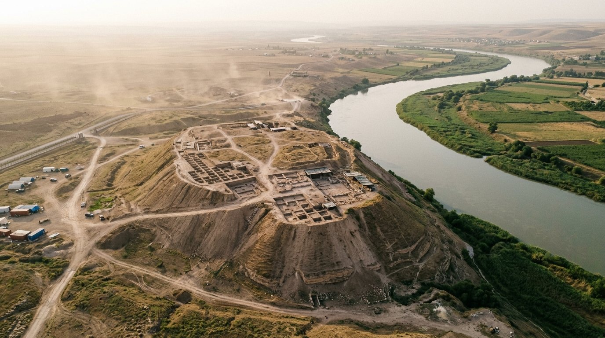
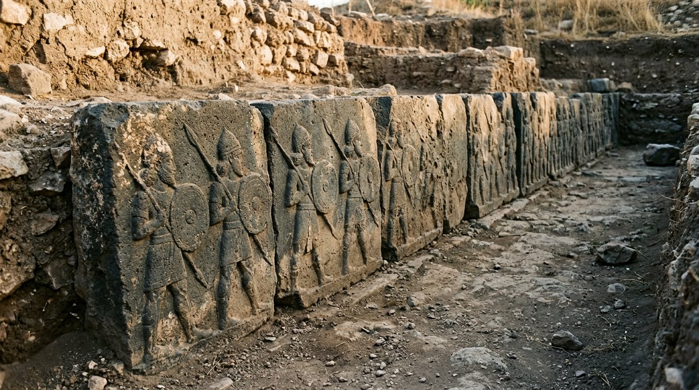
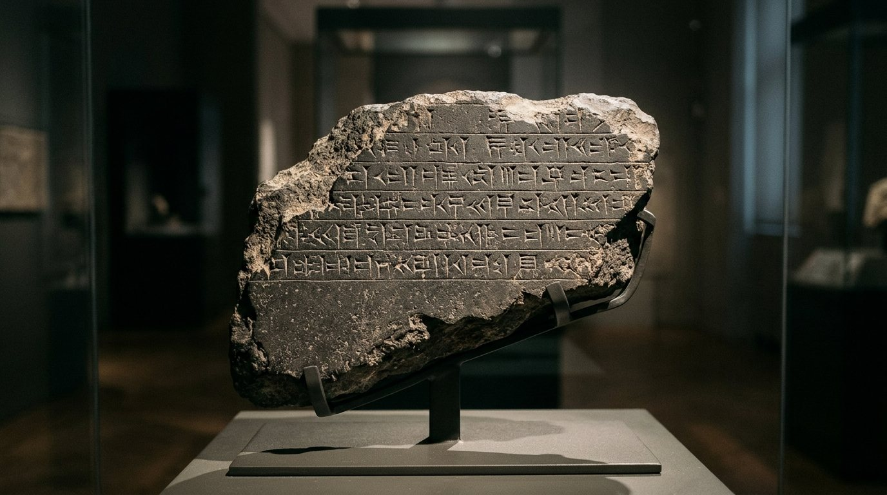

Karkemish: la Inscripción de 2.700 Años que por fin Encontró a su Rey
Karkemish fue durante siglos la gran ciudad del Éufrates medio, en la actual frontera entre Turquía y Siria. Tras el colapso del imperio hitita, hacia 1180 a.C., se convirtió en la capital de un reino neohitita que conservó la escritura jeroglífica luvita, los relieves de basalto y los dioses de Anatolia, mientras al este crecía el poder de Asiria. Fue también uno de los yacimientos más famosos de la arqueología: entre 1911 y 1914 lo excavó el Museo Británico con un joven T. E. Lawrence, el futuro Lawrence de Arabia, en el equipo.
Una pieza única
Entre los hallazgos de aquellas campañas había algo excepcional: una inscripción monumental escrita en cuneiforme, la escritura de Mesopotamia, y no en los jeroglíficos luvitas que usaban los reyes de Karkemish. Es la única inscripción cuneiforme monumental conocida de un rey neohitita. Durante décadas se interpretó como parte de un monumento bilingüe y se atribuyó al rey Astuwalamanza.
El asiriólogo Gianni Marchesi, de la Universidad de Bolonia, ha reexaminado el caso para el volumen Karkemish of the Hittites on the Euphrates: New Discoveries and New Acquisitions, publicado en 2026. Trabajó con las impresiones tomadas en 1911 y 1912 y con el único fragmento de basalto que se conserva, custodiado en Ankara.

Un nuevo dueño
Su conclusión es doble. Primero, la inscripción no formaba parte de un monumento bilingüe: era un texto cuneiforme independiente. Segundo, no perteneció a Astuwalamanza sino, probablemente, a Astiru II, un rey que gobernó Karkemish antes del 738 a.C. El fragmento conserva parte de un título dedicado a Kubaba, la diosa patrona de la ciudad, a la que se llama Reina de Karkemish.
Que un rey de Karkemish eligiera la escritura y la lengua de Asiria para una inscripción oficial dice mucho del momento. A mediados del siglo VIII a.C., la influencia asiria ya había penetrado en la corte neohitita: sus escribas, su prestigio y probablemente su presión política. Escribir en cuneiforme era hablar el idioma del vecino más poderoso.
El final de un reino
Esa cercanía no salvó a la ciudad. En 717 a.C., Sargón II de Asiria conquistó Karkemish, depuso a su último rey, Pisiri, y convirtió el reino en provincia asiria. La inscripción de Astiru II pertenece a las últimas décadas de independencia, cuando la cultura asiria ya había entrado por la puerta del palacio antes de que entraran sus ejércitos.
Desde 2011, una misión turco-italiana dirigida por la Universidad de Bolonia ha retomado las excavaciones en Karkemish y ha devuelto a la luz relieves, sellos e inscripciones. El trabajo de Marchesi muestra que también los archivos antiguos, las impresiones y las notas de hace un siglo, siguen guardando descubrimientos.

"Escribir en cuneiforme era hablar el idioma del vecino más poderoso."
— HISTORIKA · Hallazgos II
Fuentes y referencias
- Arkeonews (11/2026)
- Universidad de Bolonia, repositorio CRIS
- Karkemish of the Hittites on the Euphrates (2026)
Lee la revista
Hojea gratis Hallazgos II →